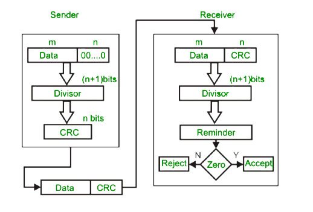
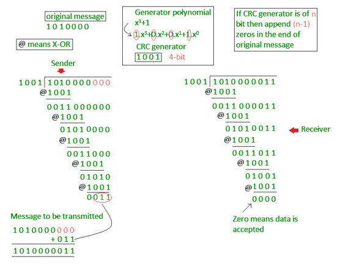

Error
A condition when the receiver’s information does not matches with the sender’s information. During transmission, digital signals suffer from noise that can introduce errors in the binary bits travelling from sender to receiver. That means a 0 bit may change to 1 or a 1 bit may change to 0.
Error Detecting Codes (Implemented either at Data link layer or Transport Layer of OSI Model)
Whenever a message is transmitted, it may get scrambled by noise or data may get corrupted. To avoid this, we use error-detecting codes which are additional data added to a given digital message to help us detect if any error has occurred during transmission of the message.
Basic approach used for error detection is the use of redundancy bits, where additional bits are added to facilitate detection of errors.
Some popular techniques for error detection are:
1. Simple Parity check
2. Two-dimensional Parity check
3. Checksum
4. Cyclic redundancy check
1. Simple Parity check
Blocks of data from the source are subjected to a check bit or parity bit generator form, where a parity of :
- 1 is added to the block if it contains odd number of 1’s, and
- 0 is added if it contains even number of 1’s
This scheme makes the total number of 1’s even, that is why it is called even parity checking.
{kind=link}
2. Two-dimensional Parity check
Parity check bits are calculated for each row, which is equivalent to a simple parity check bit. Parity check bits are also calculated for all columns, then both are sent along with the data. At the receiving end these are compared with the parity bits calculated on the received data.
{kind=link}
3. Checksum
- In checksum error detection scheme, the data is divided into k segments each of m bits.
- In the sender’s end the segments are added using 1’s complement arithmetic to get the sum. The sum is complemented to get the checksum.
- The checksum segment is sent along with the data segments.
- At the receiver’s end, all received segments are added using 1’s complement arithmetic to get the sum. The sum is complemented.
- If the result is zero, the received data is accepted; otherwise discarded.
{kind=link}
4. Cyclic redundancy check (CRC)
- Unlike checksum scheme, which is based on addition, CRC is based on binary division.
- In CRC, a sequence of redundant bits, called cyclic redundancy check bits, are appended to the end of data unit so that the resulting data unit becomes exactly divisible by a second, predetermined binary number.
- At the destination, the incoming data unit is divided by the same number. If at this step there is no remainder, the data unit is assumed to be correct and is therefore accepted.
- A remainder indicates that the data unit has been damaged in transit and therefore must be rejected.

Example :

Previous year GATE questions based on error detection:
GATE CS 2009 Question 48
GATE CS 2007 Question 68
{kind=link}
{kind=link}